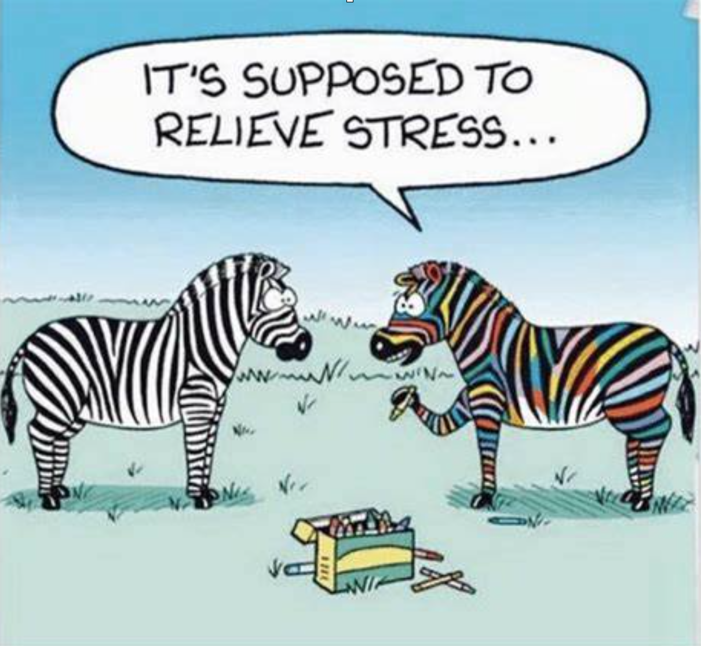

Topic: How to deal with stress?

Definition:
What is stress?
pressure or worry caused by the problems in sb's life
emotional or feeling
Ask yourself and answer
Is life becoming more or less stressful?
Have you been under stress recently?
How does stress affect you?
Is learning English stressful?
Have you ever helped someone who was feeling stressful?
New words and expressions
pushy: 有进取心的
too pushy: aggresive
under stress
to suffer from stress
under a lot of pressure
Stay up
You look so concerned, what happened? 你看起来有心事，发生了什么
Assign sb. a project
Is there anything I can do for you?
Take it easy and say something to me if you like.
Tips to Relieve Stress
play with a pet
exercise
take a nap
meditate
listen to music
Reading(loudly)
Video Games
Video gaming is a fun, and safe way of releasing anger and reducing your own stress.Take out your frustrations on your fictional enemies and other players.
Reading
Picking up a good book, and spending an hour or two in someone else's shoes, is a brilliant way to forget your problems. It might even help you spot solutions and put things into perspective.
Cook
Cooking takes a lot of concentration and effort. This makes it another productive way to let off steam. If you've had a tough day, reward yourself for making it through by cooking your favorite meal. If you can, get people round to share it with you.
Exercise
Exercise is one of the healthiest ways to blow off steam. Release some energy, let out your stress, and let any anger or pressure from the day power you on. Set yourself goals and targets, and celebrate your achievements. This is the most productive way to blow off steam, make your stress work for you, and get a great, mood boosting Adrenalin rush while you are at it.
Practice
recognize stress in your life
Make a list of it
And now make a list of solutions you think you can do to deal with it.
Conversation
A：John, you look pale. What happened?
B: I stayed up last night.
A: Did you have something on your mind? You look so concerned! Maybe I can help you!
B：Will, I'm under a lot of pressure. My manager is very pushy. He assigned me two projects. Now the deadlines are near but I have finished neither of them.
A：Is there anything I can do for you?
B：Well, I guess no one can help me but myself. For the moment, I just need someone to talk to so that I can relieve my stress.
A：I know your feeling. Take it easy and say something to me if you like.
B：Oh, buddy, you are so kind. Thank you!
A：Not at all!